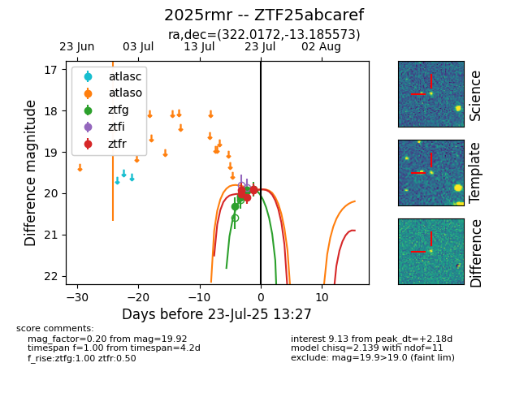

Target ZTF25abcaref at 2025-07-23 13:27, see:
FINK: fink-portal.org/ZTF25abcaref
Lasair: lasair-ztf.lsst.ac.uk/objects/ZTF25abcaref
ALeRCE: alerce.online/object/ZTF25abcaref
TNS: wis-tns.org/object/2025rmr
YSE: ziggy.ucolick.org/yse/transient_detail/2025rmr
alt names
ZTF25abcaref (ztf,fink)
2025rmr (tns,yse)
coordinates:
equatorial (ra, dec) = (322.0172,-13.18557)
galactic (l, b) = (38.7804,-40.63106)
photometry
last atlaso=18.45, ztfg=19.90, ztfr=19.92
1 atlaso, 6 ztfg, 5 ztfr detections
